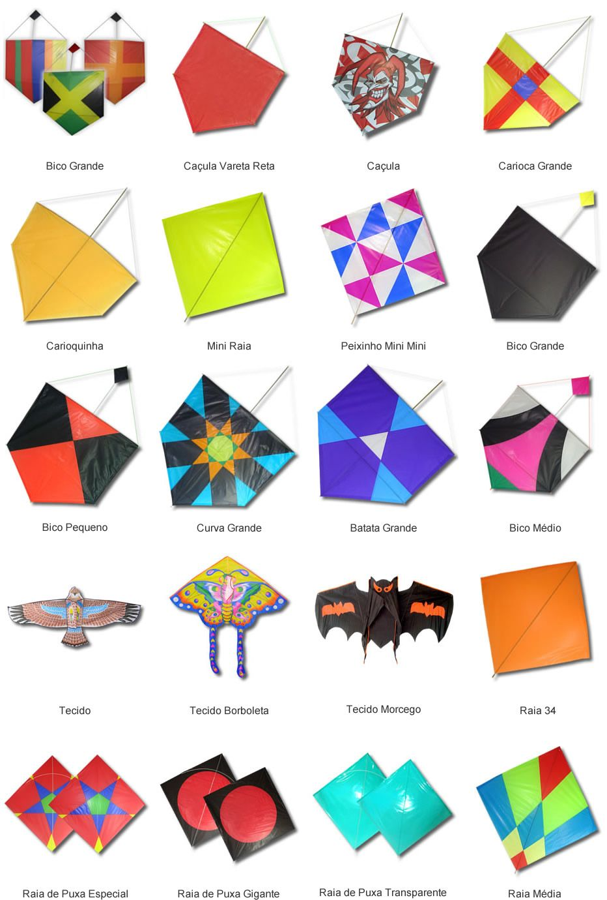

A pipa tem suas origens no Extremo Oriente e, certamente, na China, onde ele nasceu há 3000 anos atrás. Intimamente ligada à religião e mitologia, ela foi usada para chamar a atenção das mentes, e muitas vezes tinha a forma de um pássaro.
Porém só em meados do século XVIII foram encontrados vestígios de experiências como a do escocês Alexander Wilson, que mediu a mudança na temperatura do ar em função da altitude, com termômetros associados a seis pipas juntos de trem para a mesma linha de contenção e espalhe sobre uma altura de 900 metros.
E temos como o mais famoso, Benjamin Franklin em 1752 que mostrou que o raio era um fenômeno elétrico e não de origem divina, lançando um papagaio em uma tempestade.
Nós brasileiros conhecemos as pipas através dos colonizadores portugueses por volta de 1596. Um fato pouco conhecido de nossa História deu-se no Quilombo dos Palmares, quando sentinelas avançadas anunciavam por meio de pipas quando algum perigo se aproximava – mais uma prova de que a pipa era conhecida na África há muito mais tempo, pois os negros já cultuavam-na como oferenda aos deuses.
Os nomes que a pipa ganhou aqui derivam do animismo que o povo atribuiu ao objeto. Por sua semelhança com a “arraia” ou “raia”, a pipa é assim chamada em muitos lugares do país. Por sua variedade de cores e pela circunstância de voo ela é também denominada “papagaio”. O próprio nome “pipa” deriva da semelhança que o objeto tem com a vasilha bojuda de madeira que serve para conter líquidos; No Rio Grande do Sul é uma autêntica tradição espanhola o velho costume de empinar pipas na sexta-feira santa. As pessoas saem cedo de casa, com um farnel na mão e a pipa pendurada nas costas, e seguem para os cerros da região longes dos fios e das correntes elétricas.
